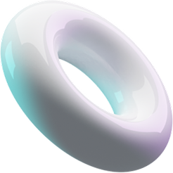

<section class="record">
  <div class="container">
    <div class="record__wrapper">
      <div class="record__gif gif">
        
      </div>
      <div class="record__text">
        <h2 class="record__title title4">Запись экрана</h2>
        <div class="record__block">
          <h3 class="record__subtitle subtitle4">Недостаточно снимков? Запишите происходящее на экране со своим голосом
            или звуком
            системы.</h3>
          <h4 class="record__descr descr4"><span class="purple">Достаточно нажать две кнопки мыши</span>, выделить
            необходимую
            область и начнется запись
            видео <br class="record__full">
            с экрана. Быстро <br class="record__mid"> и без сложных настроек</h4>
        </div>
      </div>
    </div>
  </div>
  <div class="record__rectangle"></div>
  
  
  
  
  
</section>